Processing Tutorial
Download Processing
First of all, be sure you already downloaded Processing from the official website. Click the link that corresponds to the type of computer you’re using. Once the download is over, extract the data on a folder of your choice (make it easy to reach, this is where you will launch Processing everytime!). Open this folder, and double click on processing.exe. A new windows should open; this is where you’ll be writing your code.
Similar to how Microsoft Word and Google Docs help you edit text, code editors like this help you write code. The Processing editor includes some handy features like syntax highlighting (coloring the text) to make it easier to read your code, and a play button (the triangular button in the upper-left corner) to make it easier to run your code.
First drawing with Processing
Draw me a circle
In your Processing editor, type the following line of code and click the play button (note, you can also press Ctrl+R on your keyboard):
circle(40, 30, 50);
When you click the play button, Processing runs the code you just wrote. You should see a window that looks like this:
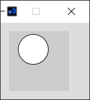In fact, what you wrote on the editor is called an instruction, or a function. In other words, you asked to your computer to execute a specific action, in that case drawing a circle. We will enter more in details about the numbers in the parenthesis you also wrote a bit later, but first, let's try to draw another shape, say a rectangle.
Draw me a rectangle, part I
Considering the previous example, we can try to guess what could be such the corresponding instruction. Since the previous function was circle to draw a circle, it seems legitimate to try the following code. In the editor, type this:
rectangle(40, 30, 20, 20);
Congratulations, you just had your first programming error in Processing. Don't worry, this is a common event in programming.
Okay, but what just happened?
As mentionned earlier, to ask your computer to draw a rectangle, you need the corresponding instruction. We assumed the instruction was rectangle (which was a fair guess), but it turns out that the correct instruction is rect.
Wait, it didn't work just for that?
Yes, just for that. Without entering into the technical details, the computer is limited to understand very specific words and if you do not use these words, it will not work. And somehow, it makes sense: it is similar that someone asking you to do a task (no matter how simple it is), but in a language you don't know...
In fact, the software detected that it didn't know the instruction. Indeed, below the editor, you must have the following message:
The message explicitely tells you that the program does not recognise the instruction rectangle (note: to be precise, it tells you it does not know this instruction given with the number wrote in the parenthesis, but for now let us just focus on the fact the instruction rectangle does not exist). Every time you will have a syntax error on your code (Spoiler: this will happen a lot, and this is normal), a message will appear here.
Before finaly drawing our first rectangle, let me show you a very common error in Processing (especially for beginners).
Syntax Error - Missing ";"
Let us take back our first command we wrote, and remove the final ";". Thus, you should have the following:
circle(40, 30, 50)
Similarly as before, this error message appears below the editor:
Okay, indeed but why is it important?
Well, it is because this is a typo you will do a lot; probably more than you might think. My goal here is to teach you how to detect this error, to solve them by yourself. So keep in mind the crucial following syntaxic rule:
Every instruction in Processing ends with a semicolon.Draw me a rectangle, part II
Now we finally know the correct instruction for the rectangle, we know what to write on the editor, that is:
rect(40, 30, 20, 20);
and launch your program by clicking on the play button (or Ctrl+R). You should have the following result:
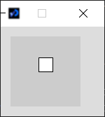Now, as promised, let us focus a bit on these numbers in parenthesis we wrote several times now.
Coordinates and arguments
Hmmm, I feel like I'm missing piece of information there, no?
Exactly ! To draw what I have in mind, you need more data: where I want to have the rectangle drawn, what is its height, its width, eventually even the angle or its color. These are the informations we give to the instruction in the parenthesis: we call them arguments.
Now, take a bit of time to change the arguments of the rect function, and relaunch the code each time. Try to understand which argument corresponds to what.
If you prefer, you can directly try to change the values with the interactive figure below.
Coordinates
With your previous experiments, you may have understood that the two first numbers change the position of the rectangle. To be precise, the first number corresponds to the x-coordinates and the second to the y-coordinate of the top-left corner of the rectangle. If the notion of coordinates is not super clear for you, here is a figure to help you understand how it works:
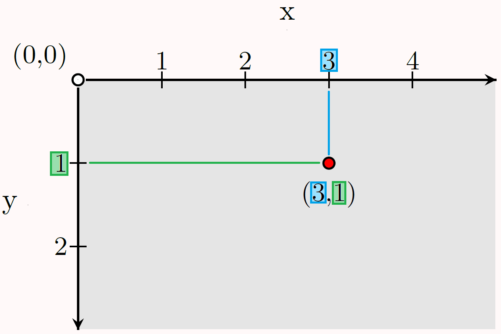Suppose that the canvas of your drawing corresponds to the gray area of the previous figure. This canvas contains (virtually) two axes: the x-axis that corresponds to the top border of the canvas, and the y-axis which is on the left border of the canvas. The x-axis is oriented from left to right, and the y-axis is from top to bottom. At each point of the canvas corresponds a unique pair of numbers, called coordinates and is written (n° of unit on the x-axis, n° of unit on the y-axis). For exemple, in the figure above, the red point has coordinates (3,1), because on the x-axis, its value is 3 and on the y-axis, its value is 1.
If you are used to graphs in mathematics, notice that the origin here is at the top-left corner of the canvas.You can also see how coordinates work in this interactive figure. Click anywhere on the figure to lock the current point.
Here is a small exercise for you:
Blue point: (1,-1); Green point: (0,2); Orange point: (4,2)
Note that the axes also continue for negative numbers. Therefore, it is totally possible to have coordinates like (-20, -22), but it won't appear on your screen.
Width and height
Moving back to the two last arguments of the rect instruction, you may have understood with your previous experiments that they correspond to the width and height of your rectangle. Therefore, we have the following syntax.
rect(x, y, width, height);
We finally can totally decrypt the instructions to draw a rectangle, such as rect(50, 10, 20, 30);. The latter asks to your computer to draw a rectangle with its top-left corner in coordinates (50,10) and with width 20 and height 30.
Hmm, I'm thinking of this only now, but 30 what? What's the unit?
Indeed, this is something I didn't mention so far. For distance units, Processing uses the pixel (often wrote 'px'). A pixel is the smallest controllable element of a picture represented on the screen. To simplify, every screen is made of millions of small lights of different colors that are on with different intensities. Each of these lights is a pixel. We will come back with the notion of pixel soon when we will mention colors! But first, another exercise:
- rect(20,10,30,80);
- rect(10,10,50,10);
- rect(20,20,20,20)
- rect(0,20,10,30);
- rect(0,0,40,40);
- 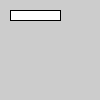
- 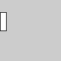
- 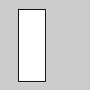
- 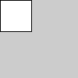
A.3, B.1, C.5, D.2, E.4
Shapes, shapes, shapes
In addition to rectangles, Processing already created instructions to draw basic forms. We detail here the different shapes primitives. Instead of simply reading these instructions, I strongly recommend you first try to guess what could be their arguments.
Circle
We already saw that circle was the function to draw... a circle. We can also notice that this function takes 3 numbers as arguments. Can you try to guess which corresponds to what? In other words, if I ask you to draw a circle, what informations would you need?
circle(x, y, diam);
Where x and y stands for the coordinate of the center of the circle, and diam stands for its diameter.
Diameter? Damn I thought about the radius instead...
And you would have been right! More precisely, it could have had been the radius instead. What was important was to guess there was an information needed for the position, and one for the size, like previously for rect.
In fact, there are some reasons why one would prefer to put the diameter than the raidus here. In the same way that the order of the arguments is x, y, diam, and not diam, y, x (or any other ordering): consistency.
Remember, for rectangles, it was x, y, width, height, that is first the position, and then the size informations. For circles, these informations appear in the same order. Do you see now why more the diameter than the radius?
Hmm, not really...
Because we can see the diameter of a circle also like its width and height! Therefore, this is consistent with the rectangle instruction, as well as our next instruction for the ellipse...
Ellipse
Ellipses can be seen as a generalisation of circles with a width and height not necessarily equals. They are fairly common in physics, astronomy and engineering. For example, the orbit of each planet in the solar system is approximately an ellipse.
There are multiple ways to define an ellipse (excentricity, focus points, etc...). In Processing, we define an ellipse with the position of its center, and its width and height; see figure below.
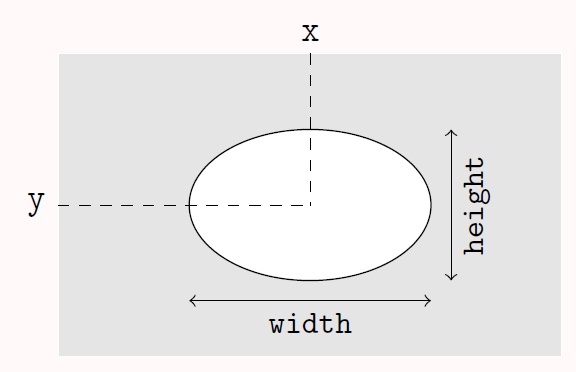Therefore, the correct instruction to draw an ellipse is:
ellipse(x, y, width, height);
Similarly as before, I encourage you to make some tries on your editor, or directly here by changing the values below.
Give two distinct instructions that draws a circle at position (20, 40) and with radius 15 ?
circle(20,40,30); ellipse(20,40,30,30); We have to multiply the radius by 2 to get the diameter !
Line
The instruction to draw a line in Processing is fairly straightforward; you just need to give the coordinates of the two extremities of the line. Namely, we have:
line(x1, y1, x2, y2);
Where (x1, y1) stands for the position of the first extremity and (x2, y2) the position of the second. See the following figure.
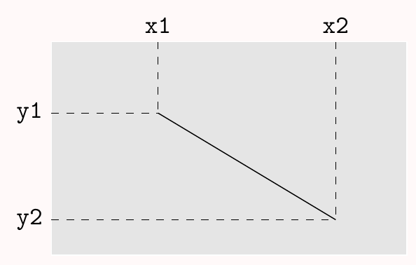Wait, wait, wait... What about the thickness? If I ask you to draw a line, I may expect it to be thick or thin !
Indeed, that's a very good remark ! The creators of Processing could have decided to add an extra argument to determine the thickness of a line. However, they decided to deal with it in another way we'll see later. Besides, note that this thickness question could also have applied for all the other shapes; I could have expected thick strokes for my initial rectangle! But it is true that it is more clear that something is missing (Spoiler: another instruction!) to handle the thickness.
line(20, 40, 50, 40);
line(50, 40, 50, 70);
line(50, 70, 20, 70);
line(20, 70, 20, 40);
Note that this square does not have an inside-color!
Triangle
Let us now see the instruction for triangles. If you try to think how you can describe a triangle, you may realise there are several ways to do so. However, the easiest way to do so is probably the one used by Processing, that is simply describe the coordinates of its three vertices. Therefore, we have the following syntax: 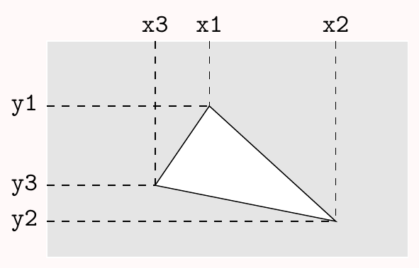
triangle(x1, y1, x2, y2, x3, y3);
Some instructions for basic shapes exist in Processing, such as quadrilaterals or arcs. If you want to know more about them, feel free to read their documentation on the official website here. The idea of this section was to introduce you some of them, not being exhaustive.
What about the non-basic ones? What if I want to draw a star for example?
Technically, you can see a star as several triangles. For exemple, try the following code:
triangle(50,10,20,70,80,70);
triangle(50,90,80,30,20,30);
You should obtain the following result:
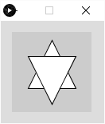This is not exactly what I expected. Can I put colors? And these strokes are a bit annoying...
Don't worry for the colors and the stroke, we will see how to handle this in the following section. I also understand that this is not exactly what you had in mind. Thus let us see a last instruction that allows you to make more complex shapes (like stars, for example).
Complex shapes
Processing create functions to draw polygons of any kind. However, the use is a bit more complex than the ones we saw so far.
Suppose I ask you to draw me a polygon that goes through the points of coordinates (20, 20), (80, 20), (80, 80), and (20, 80), what will you draw?
Hmm, I'd say it is this square.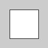
Hmm, what if I tell you this is not what I had in mind?
Eh? Where is the problem?
What if I tell you this is this shape I had in mind?
It's absolutely not what you asked me!
Are you sure? They both go through the exact same vertices, and the ones I told you!
You're cheating, the ordering on the vertices you gave me was wrong.
This is precisely where I wanted you to end up by asking you this question: the order matters if you define a shape only by its vertices. Note that this could have had happened for the line and triangle instruction, since both used positions of their vertices. However, I let you convince yourself that a problem such the one we just had cannot happen with less than four vertices.
Anyway, we can now move to our instructions to define these kind of shapes.
InstructionS. Plural?
Yes, this is a triple of instructions: beginShape, vertex, and endShape. In your editor, try the following code:
beginShape();
vertex(80, 20);
vertex(20, 20);
vertex(80, 80);
vertex(20, 80);
endShape(CLOSE);
You should end up with the figure above, the one I had in mind. Try to change the order of the vertex instructions and see how the result changes each time.
There are several solutions to this question,
here is one of them:
beginShape();
vertex(20, 20);
vertex(80, 20);
vertex(80, 80);
vertex(20, 80);
endShape(CLOSE);
Here is precisely how these instructions work.
First, beginShape() tells to Processing you are defining a new complex shape. This is the first instruction you have to put when you start to describe such a shape.
Then, vertex(x,y) defines the coordinate of a vertex of the shape. As we saw, the ordering matters. You can put as many vertices as you want.
Finally, you finish your shape with endShape(CLOSE).
What does this CLOSE means?
If you try to remove it from the code of the previous exercise, you should have this:
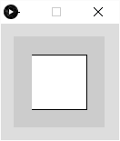It just tells Processing to close the figure by adding a final edge from the last vertex of the shape and the first one.
As said previously, these instructions are slightly harder than the ones we saw before. However, they are still pretty logical; you can see these instructions as follow: beginShape() asks the computer to take a pencil. Then, it goes from one vertex to the other without lifting the pencil. Finally, endShape(CLOSE) close the shape, and put back the pencil.
Hint: The previous lines with the triangles and add new vertices may be helpful.
There are several solutions to this question,
here is one of them:
beginShape();
vertex(50,10);
vertex(60,30);
vertex(80,30);
vertex(70,50);
vertex(80,70);
vertex(60,70);
vertex(50,90);
vertex(40,70);
vertex(20,70);
vertex(30,50);
vertex(20,30);
vertex(40,30);
endShape(CLOSE);
You start to like my ugly solution with two triangles, right?
:)
beginShape();
vertex(x1,y1);
vertex(x2,y2);
...
vertex(xn,yn);
endShape(CLOSE);
Colors
Fifty shades of gray
Imagine you are in a dark room with a flashlight and a white screen in front of you. Suppose that the flashlight has a button that allows you to choose its intensity. By projecting the light on the screen, and changing the value of its intensity, you'll see all the possible shades of gray: from black when the flashlight is totally off, to plain white when it is at its maximum power. You can try to see the different shades of gray with the following interactive figure:
You can change the intensity of the light by clicking and dragging the mouse on the flashlight, or by scrolling over it (with Shift pressed).First, your black room thing is a bit spooky. Then, what's the point?
This is how shades of gray work in Processing. Using the instruction color and an integer between 0 and 255, you can create a gray that goes from plain white to plain black; the higher the number, the brighter the color (like the intensity in our spooky scenario).
color(n);
Where n stands for a number from 0 to 255.
Why from 0 to 255, and not 0 to 100?
It would require a long explaination to fully answer this intersting question, but there is (obviously) a reason. At the very base, computers work with binary, that is a way to right information (number, letters, images, programs...) with only 0s and 1s. Without entering into the details, it implies that we often come across numbers that are powers of 2, such as 1, 2, 4, 8, 16, 32, 64, 128 and... 256.
Yes, but it's 255...
Correct! But the number of integers from 0 to 255 is 256 (because we have to count the 0)! By the way, if you have ever played to Minecraft, you may have noticed that the powers of 2 are everywhere (size of a stack, highest altitude, etc...). If you never played this game, just ignore this comment !
Okay, fine. But "color", really? These gray shades really lack of colors to me...
I have to admit you are very right! So let us move to real colors!
From pixels to RGB
Have you ever looked in detail at what your screen looks like up close? Well, if not, let me show you how it looks like.
What? No white pixels? Only red, green and blue?
No white pixels, but still you seem to see the white, the yellow, the purple, cyan etc from your screen! This is because you can decompose every color in a combinaison of shades of red, green and blue.
Let us come back in our spooky dark room (sorry for that), but this time you have 3 flashlights: one red, one green, and one blue. Using the interactive figure below, observe how the lights add up to create new colors, including colors not in your three initial colors.
In particular, notice that the color you obtain by putting the three intensities at maximum is... white! Spend some time to try to get other colors; how to get yellow, orange, purple?
Thus, to define a color in Processing, you have to use the following instruction:
color(r, g, b);
Where r, g, b stand for a number from 0 to 255 corresponding to the level of red, green and blue respectively.
We call RGB value of a color the triple (r,g,b) that corresponds to this color.The instruction color is already the one we used for gray. Isn't there a problem?
No, because Processing can easily understand which calls of color are for the gray version and the ones for the color version, it just have to check the arguments: if it is only one number, it's gray; if it has three numbers, it's the RGB value. There is a lot more to say about how we can reuse the same name for a function, but for now we will be limited to this.
- color(0,0,0);
- color(200,0,200);
- color(150,150,150)
- color(255,200,40);
- color(80,50,220);
A.4, B.3, C.2, D.5, E.1
Must say that's nice and finally colorful. But I didn't understand how to use the colors for my drawings?
Let's dig to this right now!
Background, fill, stroke and size
Background
First,let us change this ugly light gray background. To do so, Processing has the instruction background, that can be used in different ways:
background(color(n));
background(color(r, g, b));
See, we give as an argument of the instruction the color we want to put for the background. As you can guess, the first syntax will give a shade of gray, and the second a RGB color.
Great, but this is a bit long to write...
There's hopefully a shorter way to write it, but keep in mind that it is not always the case, and
instructions can be long to
write.
For background, here are the shortest versions. Can you guess which
corresponds to which?
background(n);
background(r, g, b);
Where n, r, g and b are numbers from 0 to 255.
Indeed, it seems pretty straightforward. The former is for the gray, and the latter for the colors.
Correct! Creators of Processing worked well to make it logical, right? Now, let us try to see what it gives in action. In the editor, try to enter the following code:
background(51, 196, 123);
You should obtain the following greenish canvas.
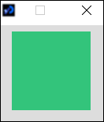Feel free to pick the color you prefer, and put it as a background.
Fill and stroke